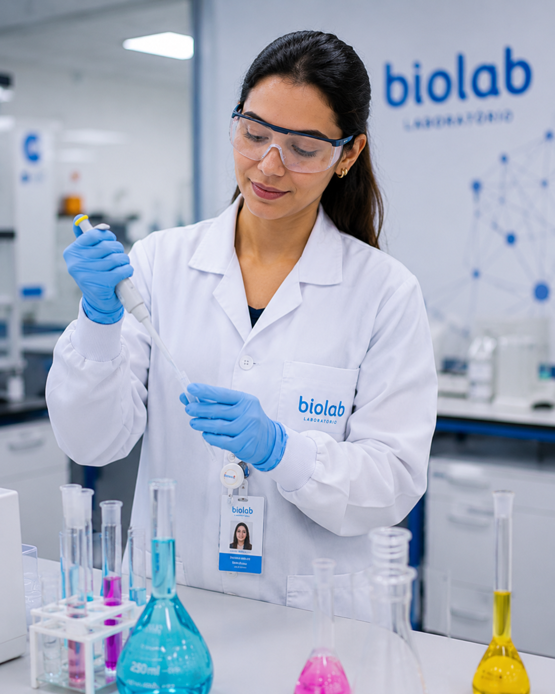

Transformamos ciência avançada em soluções reais que impulsionam saúde, sustentabilidade e inovação. Conecte-se a uma nova geração de descobertas e receba conteúdos exclusivos, tendências e avanços diretamente no seu e-mail.

Unimos pesquisa de ponta e tecnologia para criar soluções que impulsionam a saúde, aceleram a sustentabilidade e redefinem o futuro da inovação. Tudo de forma prática, aplicável e orientada a resultados.
"A parceria com a Biolab trouxe agilidade e precisão para nossas pesquisas. Conseguimos reduzir o tempo de desenvolvimento e aumentar o impacto dos nossos resultados."
Diretora de P&D HealthTech Brasil
"Com o suporte da Biolab, conseguimos transformar inovação científica em produtos muito mais rápido. A abordagem prática faz toda a diferença nos nossos projetos."
CEO BioSolutions
"A Biolab é um parceiro estratégico para quem busca excelência científica e impacto real. Profissionais altamente qualificados e soluções que realmente geram resultados."
Gerente de Pesquisa PharmaPlus
Estamos prontos para transformar sua pesquisa em impacto real.
Entre em contato conosco para dúvidas, parcerias ou projetos.
faleconosco@biolabfarma.com.br
Atendimento direto com nosso time especializado.
+ 0800 724 6522
Visite nossa unidade ou agende uma reunião presencial.
São Paulo - Brasil